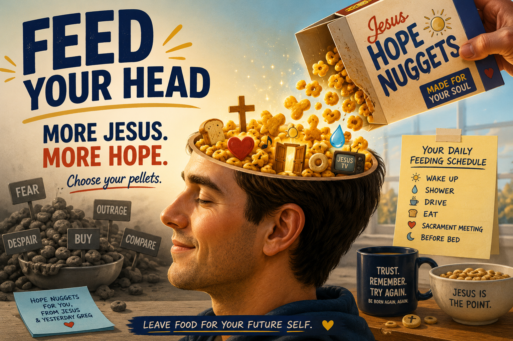

Feeding Myself Jesus Hope Nuggets
Every Sunday Jesus Feeds Me
Every Sunday Jesus feeds me.
Literally.
I sit down at church and someone brings me a little piece of bread and a little cup of water. I take them into my body while participating in a ritual whose central instruction is remarkably simple:
Remember Jesus.
Take.
Eat.
Remember.
Take.
Drink.
Remember.
And lately I have begun to wonder whether Jesus is teaching me to extend that Sacramental pattern across the rest of my life.
What if the Sacrament is not only something I participate in once each Sunday, but also a pattern Jesus is teaching me to rehearse?
What if I could deliberately place little reminders of Jesus throughout my day—something to consume with my eyes, ears, imagination, memory, and sometimes even my mouth?
- A scripture beside my bed.
- A song in my shower.
- A phrase in my car.
- Bread.
- Water.
- A Cheerio.
- A picture.
- A strange little Jesus object I left somewhere yesterday, knowing that Tomorrow-Greg would eventually encounter it.
Take. Eat. Remember.
Maybe that is partly what Jesus and I have been building inside my Jesus-Greg WORLD all along: a kind of expanded Sacramental landscape—a world filled with little things that invite me to consume another thought of Jesus.
Which brings me to something I recently heard about pellets.
Because whether I realize it or not, I am being fed all day long.
I watched a short commentary about The Truman Show that got me thinking about pellets.
The commentator's point, as I understood it, was that Truman isn't the only person being programmed.
So is the audience.
And so are we.
We wake up, grab the little rectangle beside our bed (our electronic mind-feeder), and begin eating. Babylon TV?
- A war.
- An outrage.
- A tragedy.
- A political enemy.
- A beautiful body.
- A frightening prediction.
- Somebody crying in a parked car.
- Something we should buy.
- Something we should fear.
- Something we should be angry about.
- Something everybody else apparently believes.
Pellet. Pellet. Pellet. Pellet. Pellet.
By lunchtime we may have swallowed hundreds of tiny instructions about what deserves our attention, what kind of world we're living in, what we should desire, what we should fear, and how we should feel.
Which made me think:
YOU ARE HUMAN.
YOU ARE GOING TO EAT PELLETS.
The question is:
Whose pellets?
On what schedule?
I don't think I get to choose whether the world gets inside my head.
I'm alive.
I have eyes.
I have ears.
I have memory.
I have imagination.
I am going to look at something.
I am going to rehearse something.
I am going to remember something.
I am going to inhabit some world.
So perhaps the goal isn't to somehow become an unprogrammed Greg.
Maybe there is no such creature.
Maybe the more interesting possibility is to become increasingly conscious—witting—about what I repeatedly put into my head.
And that suddenly helps me understand something Jesus seems to have been doing with me for years.
Jesus is giving me Hope Nuggets.
Little Jesus pellets.
- Eat this when you wake up, Greg.
- Eat this when you stretch.
- Eat this when you take a shower.
- Eat this when you drink water.
- Eat this when you eat bread.
- Eat this when you drive.
- Eat this when you lie down.
- Eat this when you wake up again.
And increasingly, my Jesus-Greg WORLD is becoming a gigantic collection of these little things.
- Songs.
- Scriptures.
- Pictures.
- Objects.
- Rooms.
- Scenes.
- Phrases.
- Stories.
- Cheerios.
- Pillows.
- Showers.
- Bread.
- Water.
- Doors.
- Toasters.
Each one says, in its own peculiar way:
Remember Jesus.
Look again.
Get MORE Jesus.
Try again.
Be Born Again, Again.
Witting World-Building Is Self-Feeding
That may be one way for me to understand what I have been building.
It is witting world-building.
And witting world-building is partly self-feeding.
Instead of merely accepting whatever emotional weather happens to be broadcast into my consciousness that morning, I can participate in constructing the little world of reminders through which I will walk.
I can leave food for my future self.
Today-Greg can put a Jesus pellet beside the bed for Tomorrow-Morning-Greg.
Shower-Greg can find another one waiting in the shower.
Driving-Greg can discover one in the car.
Sacrament-Meeting-Greg can find a Cheerio waiting for him at church.
And this is where the whole strange architecture of my Jesus-Greg WORLD begins making more sense to me.
I am not merely decorating my environment.
I am feeding myself.
Or, more precisely, I am trying to let Jesus teach me how to feed myself Jesus.
Jesus TV Is Programming
Which brings me back to Jesus TV.
I keep calling it programming.
That word now seems increasingly important.
Programming.
Maybe the question isn't:
“Greg, are you being programmed?”
Of course I am.
The more useful question might be:
“Greg, what programming are you repeatedly watching?”
And then an even better question:
“Jesus, what do You want me to feed my head?”
That changes everything.
Because now Jesus TV isn't merely something I watch.
It is an attempt to consciously participate with Jesus in arranging what I will repeatedly encounter.
- What will Morning Greg see?
- What will Shower Greg remember?
- What will Driving Greg hear?
- What will Sacrament Greg rehearse?
- What will Tired Greg encounter?
- What will Frightened Greg be reminded of?
- What will Lonely Greg eat?
Hope Nuggets.
Tiny pieces of Jesus programming scattered throughout the day.
Not because I imagine I can completely control my mind or manufacture my own reality.
And not because everything outside my Jesus-Greg WORLD is somehow bad.
Rather, because I increasingly understand something very simple:
Whatever I repeatedly attend to helps build the world I experience.
So I want to become more intentional about my attention.
I want Jesus involved in the programming schedule.
“What Do You Want Me to Eat, Jesus?”
Maybe that becomes one of the recurring questions of my Jesus Groundhog Day:
Jesus, what do You want me to feed my head today?
And then I listen.
- Maybe He says:
- Eat this scripture again.
- Listen to this song again.
- Remember this conversation.
- Look at this picture.
- Touch this object.
- Eat this bread.
- Notice this water.
- Remember this Cheerio.
- Rehearse this scene.
- Tell yourself this story again.
Take another Hope Nugget, Greg.
Because tomorrow morning the world will be waiting with its pellets.
- Fear pellets.
- Outrage pellets.
- Comparison pellets.
- Despair pellets.
- Buy-this pellets.
- Hate-them pellets.
- You-are-not-enough pellets.
And I will still encounter plenty of them.
But they don't have to be the only food in the bowl.
I can leave something else there.
Something deliberately planted.
Something hopeful.
Something that points toward Jesus.
Something Jesus and I put there yesterday for the Greg who would wake up today.
And then perhaps tomorrow I will wake from my little nightly death, open my eyes, and discover that Jesus and Yesterday-Greg have already left breakfast waiting for me.
A bowl full of Jesus Hope Nuggets.
Eat up, Greg.
We've got a WORLD to build.